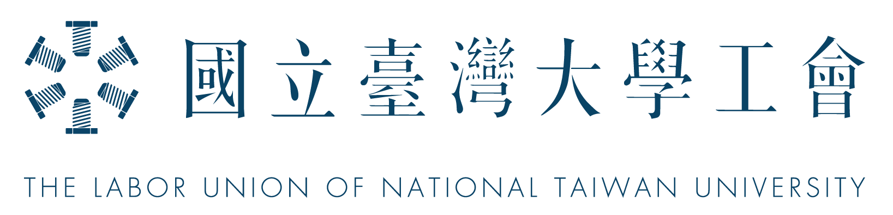

國立臺灣大學工會章程
經 103 年 12 月 17 日會員大會決議修正第 24、29 條 經 104 年 12 月 11 日會員大會決議修正第 10、11、12、28、29、31 條 經 105 年 12 月 10 日會員大會決議修正第 2、4、32 條 經 106 年 12 月 20 日會員大會決議增訂第 27-1 條
第一章 總則
- 第 1 條 法律依據
-
本章程依據工會法及工會法施行細則暨相關法令訂定之。
- 第 2 條 會名
-
本會定名為「國立臺灣大學工會」（以下簡稱本會）。
- 第 3 條 宗旨
-
本會以促進勞工團結，提升勞工地位及改善勞工生活為宗旨。
- 第 4 條 範圍
-
本會以國立臺灣大學及其所屬機構（以下簡稱事業單位）之勞工為組織範圍，會址設於臺北市，並得視會務需要，於各地區設立辦公場所。
- 第 5 條 任務
-
本會之任務如下：
- 團體協約之締結、修改或廢止。
- 勞資爭議之處理。
- 勞動條件、勞工安全衛生及會員福利事項之促進。
- 勞工政策與法令之制（訂）定及修正之推動。
- 勞工教育之舉辦。
- 會員就業之協助。
- 會員康樂事項之舉辦。
- 工會或會員糾紛事件之調處。
- 依法令從事事業之舉辦。
- 勞工家庭生計之調查及勞工統計之編製。
- 其他合於本會宗旨及法律規定之事項。
第二章 會員
- 第 6 條 會員資格
-
凡在事業單位從事勞動而取得報酬之勞工，除依法不得加入一般工會之公務人員、教師及代表雇主行使管理權之主管人員外，均應加入本會為會員。 擔任組長（主任）職位（務）者，屬代表雇主行使管理權之主管人員。 無行為能力或限制行為能力之勞工加入本會者，應由法定代理人書面同意。
- 第 7 條 贊助會員資格
-
不具會員資格但認同本會宗旨者，得加入本會為贊助會員。 會員因升遷或調任致不具本會會員資格者，自報到接任起，即變更為贊助會員。
- 第 8 條 入會程序
-
會員及贊助會員入會時，應提出書面申請送理事會審查，待相關程序完成後，始為本會會員及贊助會員。
- 第 9 條 退會程序
-
會員及贊助會員退會時，應以書面敘明理由報告理事會，待相關程序完成後，始為出會。
- 第 10 條 權利義務：遵守章程、服從決議、繳納會費
-
會員應遵守本會章程、服從並履行本會決議，及依本會規定按時繳納各種會費。 贊助會員應依本會規定按時繳納各種會費。 會員未繳納會費，於依本章程第 12 條規定處分前，其會員資格及權利比照贊助會員處理。 會員及贊助會員除名或出會者，應清償所欠應繳納之款項。
- 第 11 條 權利義務：參與會務
-
會員享有提案權、發言權、表決權、選舉權、被選舉權及罷免權等權利。贊助會員除無前項權利外，享有會員其他一切福利。
- 第 12 條 處分種類
-
會員及贊助會員如有違反本會章程及決議、未履行會員義務或有其他不法情事，致危害本會權利、信用名譽與利益者，得經理事會決議，按其情節輕重，分別予以警告、停權、除名等處分。 前項處分，應經理事會調查、製作調查報告後始得為之。 停權處分，應經監事會之同意。 除名處分，應經會員（代表）大會出席人數三分之二以上同意。
- 第 13 條 停權處分
-
停權處分之內容為停止表決權、選舉權、被選舉權、罷免權、會務行使及會員應享有之福利。 擔任理、監事之會員受停權處分，以當屆為限。停權期間，理、監事資格仍得維持，惟不得行使前項所列之權利。
第三章 組織與職權
- 第 14 條 會員大會
-
本會會員（代表）大會，為最高權力機關，大會休會期間，由理事會處理本會一切事務。
- 第 15 條 會員代表大會
-
本會會員人數達到一百人以上時，得經會員大會議決，由會員大會改為會員代表大會。
- 第 16 條 議事選舉規則
-
會員（代表）大會議事規則、會員代表選舉規則、理監事選舉罷免規則由理事會提案，經會員（代表）大會議決通過後實施，修正時亦同。
- 第 17 條 理監事名額
-
本會置理事九人，候補理事四人；監事三人，候補監事一人。 本會會員人數超過五百人時，每逾五百人，增設理事兩人；每逾一千五百人，增設監事兩人。
- 第 18 條 理事長選舉
-
理事會置理事長一人。理事長就理事中，以無記名單記法選任之。
- 第 19 條 監事會召集人選舉
-
監事會置召集人一人。監事會召集人就監事中，以無記名單記法選任之。 監事會召集人執行監事會決議。
- 第 20 條 理監事任期
-
理事、監事、理事長及監事會召集人之任期，每一任任期一年。 理事長連選得連任一次。 理、監事因故出缺時，由各該候補理、監事依次遞補，以補足原任期為限。
- 第 21 條 秘書長選舉
-
本會置秘書長一人，協助理事長處理一切會務。秘書長由理事長提名，經理事會同意任命之。
- 第 22 條 秘書處
-
本會置秘書處，由秘書長領導，下設秘書、組長、幹事、助理幹事若干人，依層次指揮處理會務。
- 第 23 條 待遇
-
理事、監事均無給職，得酌支車馬費。 秘書處人員之任用、解任、員額、薪資、待遇，依勞動基準法之規定，並視本會財務狀況及工作需要，由秘書長決定之。
- 第 24 條 會員（代表）大會職權
-
會員（代表）大會職權如下：
- 議決通過或修改本會章程。
- 議決通過會員（代表）大會議事規則、會員代表選舉規則、理監事選舉罷免規則。
- 議決會員之除名。
- 議決財產之處分。
- 議決工會之聯合、合併、分立或解散。
- 選舉或罷免理、監事。
- 同意團體協約協商代表人選。
- 承認事業報告及收支決算。
- 審核本會之經費收支、預算、決算。
- 審查理、監事會之工作計畫、工作報告。
- 其他與會員權利義務有關之重大事項。
- 第 25 條 理事會職權
-
理事會職權如下：
- 召開會員（代表）大會。
- 執行會員（代表）大會之決議。
- 擬定工作計畫，編撰工作報告。
- 籌措經費及編製預（決）算。
- 處理本會會務。
- 處理監事會移付事項。
- 訂定以下處理會務之辦法：
- 會員入會、退會辦法。
- 會費收取辦法。
- 會籍清查辦法。
- 其他處理會務之辦法。
- 第 26 條 監事會職權
-
監事會之職權如下：
- 監察理事會執行會員（代表）大會之決議。
- 監察本會各項工作執行情形。
- 稽核本會經費收支及其他有關財務事項。
- 議決會員之停權。
- 其他有關監察事項。
- 第 27 條 秘書處職權
-
秘書處之職權如下：
- 執行理事會之決議案與辦法。
- 議決除會員（代表）大會及理事會決議事項外之各項日常會務。
- 處理勞資爭議事項。
- 審查會員入會資格及清查會員會籍。
- 工會對外之聲明，依理事長之同意，由秘書處對外為之。
- 第 27-1 條 通知及送達方式
-
本會為行使職權或召開會議而須通知或送達者，除其他法律明文之送達方式外，得以電子郵件傳遞方式為之。
第四章 會議
- 第 28 條 會員（代表）大會會議
-
會員（代表）大會，分定期會議及臨時會議兩種，由理事長召集之。 定期會議，每年召開一次，於會議召開當日之十五日前，將會議通知送達會員（代表）。 臨時會議，應經理事會議決或一般會員五分之一或一般會員代表三分之一以上請求，或監事之請求，由理事長召集之，於會議召開當日之三日前，將會議通知送達一般會員（代表）。但因緊急事故召集臨時會議，會議通知於會議召開當日之一日前送達。
- 第 29 條 會員（代表）法定人數
-
會員（代表）大會，應有一般會員（代表）過半數出席，始得開會；非有出席一般會員（代表）過半數同意，不得議決。但第二十四條第一款至第五款之事項，非有出席一般會員（代表）三分之二以上同意，不得議決。
- 第 30 條 理監事會會議
-
理事會分為定期會議及臨時會議二種，由理事長召集之。定期會議，每三個月開會一次，於會議召開當日之七日前，將會議通知送達理事。 臨時會議，經理事三分之一以上之請求，由理事長召集之，於會議召開當日之一日前，將會議通知送達理事。理事長認有必要時，亦得召集之。 理事應親自出席會議。 監事會之定期會議或臨時會議準用前四項規定；會議由監事會召集人召集之。 監事得列席理事會陳述意見。
第五章 經費與會計
- 第 31 條 經費來源及會費標準
-
本會經費來源如下： 一、入會費。 二、經常會費。 三、捐款。 入會費及經常會費之收取標準，按工會法定之，並由理事會於每會期初公告分級表。
- 第 32 條 收取與代扣會費
-
本會會員均同意由國立臺灣大學自工資代扣本會會費後轉交本會。 本會會費，應由國立臺灣大學依本會之請求自會員工資中代扣後轉交本會。 會費有不能代扣之情形，由會務人員收取。 會費收取及代扣之程序與辦法，由理事會訂定收取及代扣辦法後公告施行。
- 第 33 條 財務報告
-
本會經費收支及財產狀況，每年應向會員（代表）大會提出書面報告。 會員經十分之一以上連署或會員代表經三分之一以上連署，得選派代表會同監事查核工會之財產狀況。理事會應按月編製會計月報表交監事會稽核。
- 第 34 條 會計年度
-
本會會計年度，以每年一月一日起同年十二月卅一日止。
- 第 35 條 解散
-
本會之解散，除因破產、合併或組織變更外，財產應辦理清算。 本會解散時，除清償債務外，其賸餘財產之歸屬，依會員（代表）大會之決議處理。但不得歸屬於個人或以營利為目的之團體。 本會不能依前項規定處理時，其賸餘財產歸屬於會址所在地之地方自治團體。
第六章 保護
- 第 36 條 不當行為禁止
-
雇主或其他代理人，不得因勞工加入本會，有工會法第 35 條所定之行為。
第七章 附則
- 第 37 條
-
本會章程未規定事項，依工會法及工會法施行細則規定辦理。
- 第 38 條
-
本章程提經會員（代表）議決通過，報請主管機關核備後實施，修正時亦同。